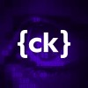

// SENIOR FRONTEND ENGINEER · REACT NATIVE
FILIP JARNO
<SeniorFrontendEngineer />
Poznań, Poland filip@jarno.pl01 / ABOUT
A self-taught frontend developer who shipped his first website at 16 — and has spent the decade since turning ambitious ideas into fast, resilient web and mobile apps.
My focus is frontend — React, React Native, and Vue — but I'm just as comfortable reaching into the backend with Node.js, SQL, and NoSQL when a feature needs it.
I love learning new technologies, untangling complex problems with creative solutions, and mentoring the people who build alongside me. Always up for a new challenge, a good collaboration, and room to grow.
Off the keyboard I try to do some kind of sport every day — tennis, running, swimming, biking — and I unwind with a bit of PC gaming.
02 / EXPERIENCE

Senior React Native Developer
2025 — NOWCallstack
Building cross-platform mobile experiences at the heart of the React Native ecosystem.
React Native
TypeScript
Senior Frontend Developer
2019 — 2025Platform24 · Stockholm (remote)
Early engineer at a Swedish startup, taking the product from concept to scale. Designed and built a cross-platform application now used by hundreds of thousands of users, with a strong focus on performance, UX, and maintainability. Contributed to frontend architecture decisions, hiring and mentoring engineers.
Node.js
Cypress
 Playwright
PlaywrightRedux
MobX
React Native Developer
2022 · 2025JugendApp · Zurich (remote)
Frontend developer for a Swiss social platform targeting a teenage audience. Built and maintained high-traffic mobile features with real-time data flows, collaborating closely with design and backend teams to deliver fast, engaging user experiences.
RxJS
- WatermelonDB
Senior JavaScript Developer
2016 — 2019Venture Devs · Poznań
Developed mobile, desktop, and web applications across multiple frameworks and platforms. Played a key role in architectural decisions, code quality standards, and team growth, including recruitment and technical leadership responsibilities.
Vue
Angular
Meteor
- Recruitment Lead
Software Engineer
2015 — 2016GFT Poland · FinTech (London)
Complex, data-driven UIs in a highly regulated financial environment.
Jasmine
Gulp
- WebSockets
 Protractor
Protractor- Protobuf
TeamCity

Samsung R&D
2013 — 2015Junior Software Engineer
Creating Samsung SmartTV applications in JavaScript.
JavaScript
Backbone
Trainee
A 3-month R&D training course in C++ and JS — one of the best courses I've taken, focused almost entirely on coding. I was part of the team that built the winning app of the internship: an online board game with a C++ backend, JS frontend, and real-time connection over WebSockets. Afterwards I was one of the few interns offered a job at Samsung R&D.
C++
03 / EDUCATION
WSB Merito University, Poznań
2012 — 2013Postgraduate studies · Internet and Mobile Applications
Poznań University of Economics and Business
2006 — 2011Master's degree · Finance and Accounting
Joel E. Ferris High School · Spokane, WA, USA
2004 — 2005Grade 12 · Student exchange year
A 10-month international student exchange after my second year of high school. I lived with an American host family who spoke only English, and attended 12th grade in Spokane, Washington. Activities: chess club and tennis team.